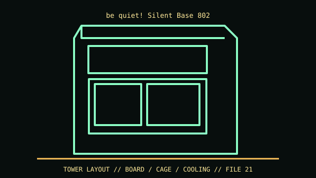

[ IDENTIFIED ENCLOSURE // SILENT BASE 802 WINDOW/SOLID FAMILY ]
be quiet! Silent Base 802
539 × 281 × 553 mm (L × W × H); GPU clearance up to 432 mm; CPU cooler 185 mm.

VARIANT / ARCHIVAL CAVEAT: 802 window/solid and 802 FX bundles vary in panels and fans. 802 differs from Silent Base 801; keep mesh and damped panels paired by orientation.
Mechanical specifications and fit
| Catalog identity | Silent Base 802 window/solid family |
|---|---|
| Dimensions and clearances | 539 × 281 × 553 mm (L × W × H); GPU clearance up to 432 mm; CPU cooler 185 mm. |
| Drive bays / mounts | Three 3.5-inch positions and seven 2.5-inch positions as manufacturer base layout; optional brackets add locations. |
| Board, system and compatibility | E-ATX up to 30.5 × 27.5 cm, ATX/mATX/mini-ITX; 7 horizontal + 2 vertical slots. Top/front interchangeable panels change airflow, not radiator fit. |
| Revision / identification | 802 window/solid and 802 FX bundles vary in panels and fans. 802 differs from Silent Base 801; keep mesh and damped panels paired by orientation. |
Preservation and installation notes
802 window/solid and 802 FX bundles vary in panels and fans. 802 differs from Silent Base 801; keep mesh and damped panels paired by orientation.
E-ATX up to 30.5 × 27.5 cm, ATX/mATX/mini-ITX; 7 horizontal + 2 vertical slots. Top/front interchangeable panels change airflow, not radiator fit.
- Capture the complete model/SKU, serial/date label, board assembly and bay/backplane/riser identifiers before disassembly; keep matched screws, trays, carriers, feet and cables with the case.
- Check the cited manual's specific build option before transferring hardware. Published maximum GPU, drive, fan or radiator capacity may not be simultaneous when a removable cage or alternative riser occupies that volume.
- For rack and vintage systems, preserve the exact rails, shields, doors, brackets and model-specific safety instructions; do not infer compatibility from a familiar brand or physical connector shape.
Manufacturer manuals and archival sources
- be quiet! Silent Base 802 manufacturer product specificationsPrimary manufacturer or model-specific technical/manual reference used for the identification and mechanical data above.
- be quiet! Silent Base 802 technical dataSecond product manual, manufacturer resource or established technical archive; choose the exact regional SKU and revision.
When exact dimensions depend on configuration, the text says so; verify the measured specimen before making a fit or restoration decision.